This one-time setup takes about 8 minutes.
NIV and NASB come from YouVersion, so they need their own free key. One key can cover both translations. Do these steps on a computer, then type the key into your Verses tool at the end.
Note: Right now, the Verses tool only supports NIV and NASB from YouVersion. Other YouVersion translations aren't wired up yet. If there's one you'd like to see added, open an issue with the request!
Open platform.youversion.com and tap Join the YouVersion Platform.
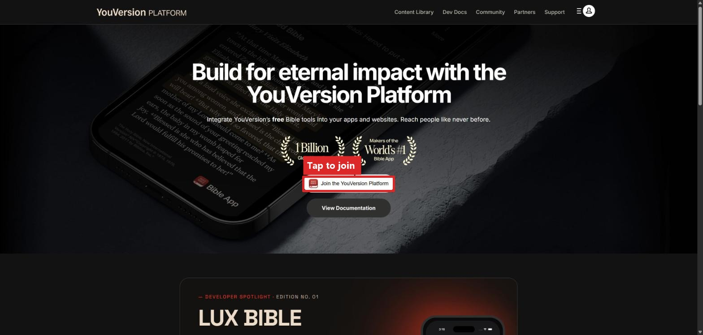
Sign in with your YouVersion account, or create one if you don't have one.
Choose Individual, fill in the rest, and tap Submit.
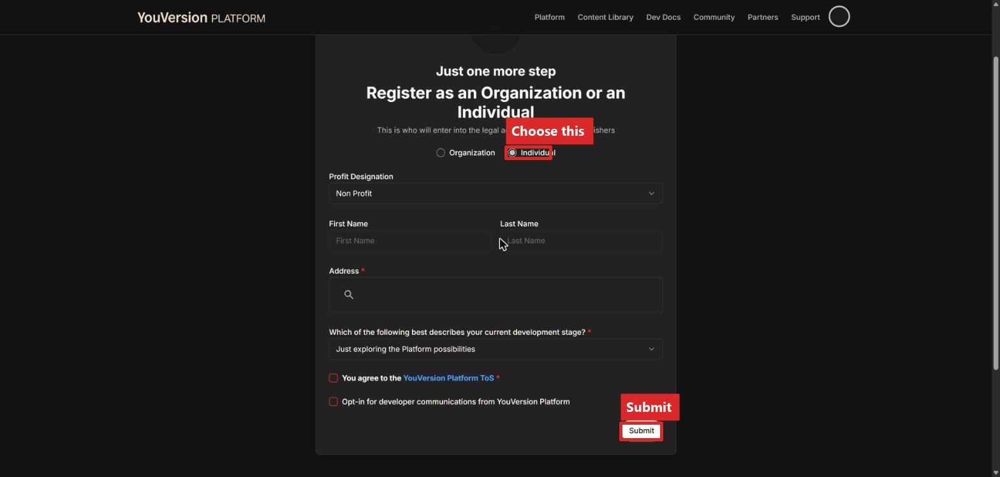
You'll land on a Get Started page. Tap Register your YVP App.
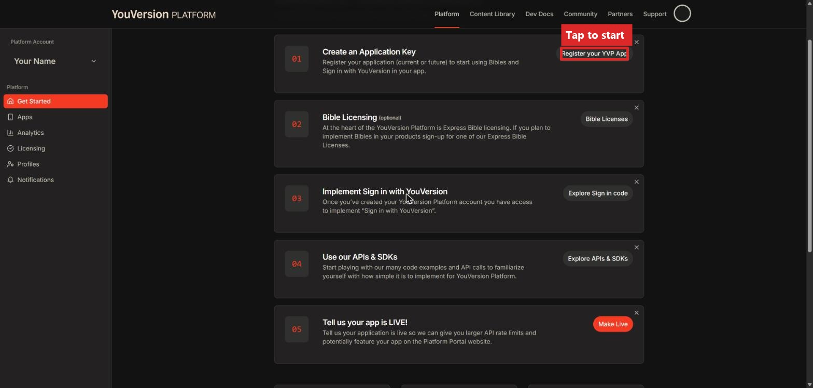
This takes you to the Apps page, which is empty the first time. Tap New Application.
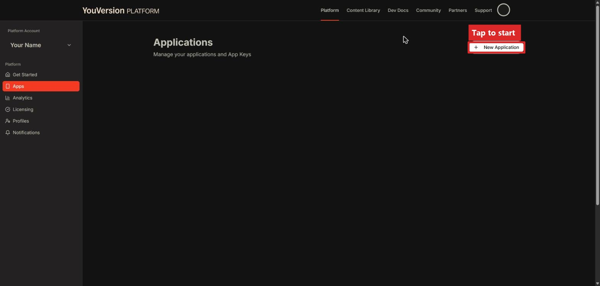
Check all three boxes confirming your app is non-commercial, then give it a name.
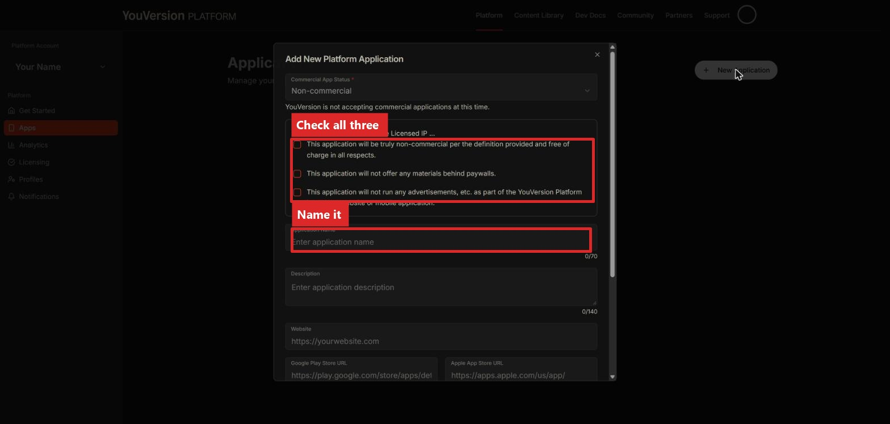
Scroll down and fill in the rest of the fields. A website or app store link isn't required if you don't have one yet. Tap Create Application when you're done.
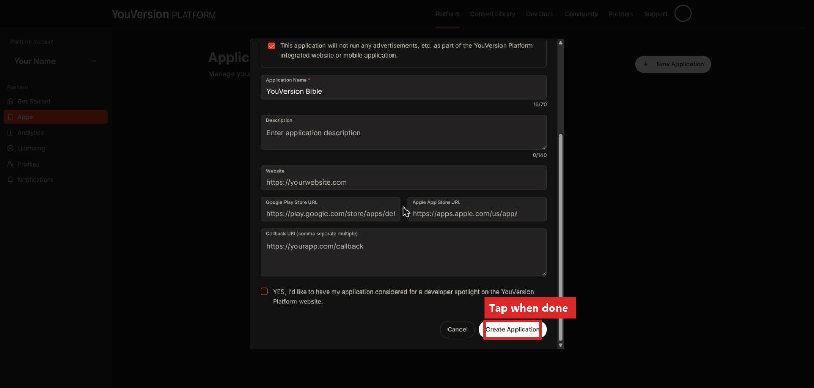
A box pops up with your key. You'll type this key into Verses at the very end. Copy it and save it somewhere safe.
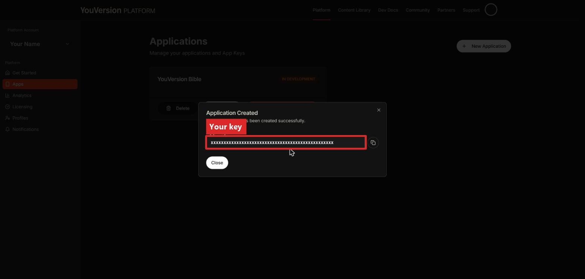
(If you ever need to find it again, go to Apps and tap Details on your application.)
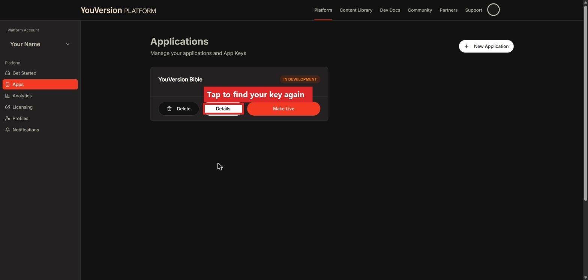
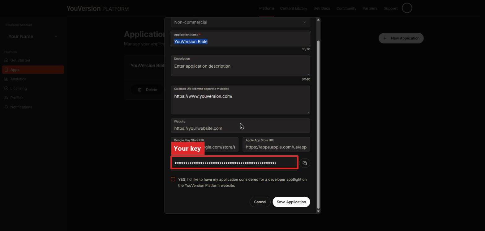
Next, we need to add NIV and NASB to your app key. Go to Licensing in the sidebar, then check the boxes for Biblica (this gives you NIV) and Lockman (this gives you NASB).
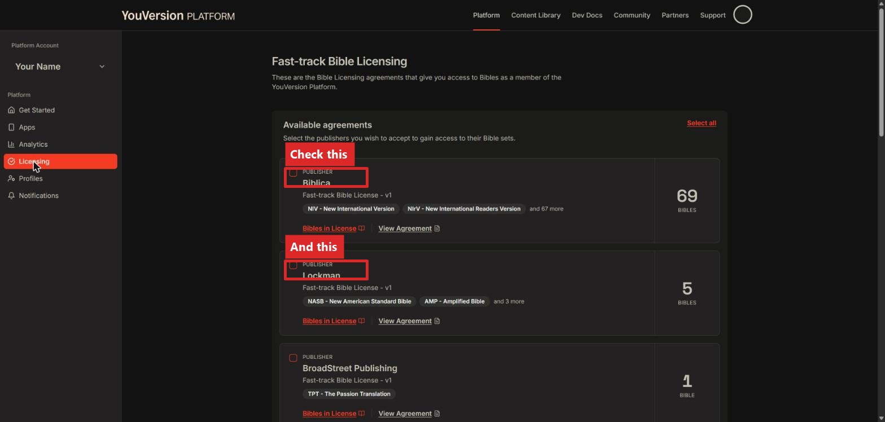
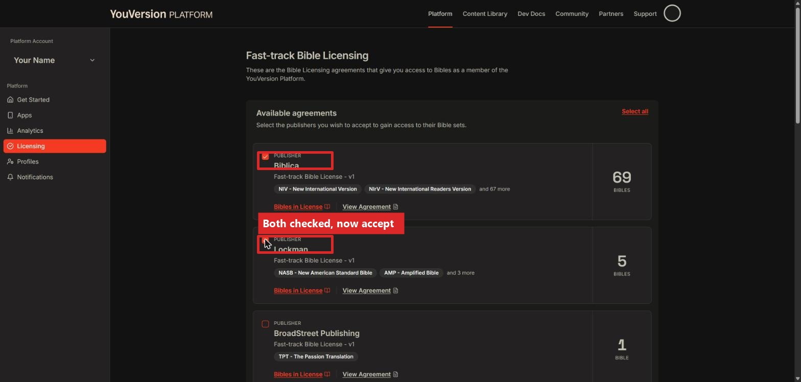
Scroll down and tap Accept Selected. Both should now show as Active.
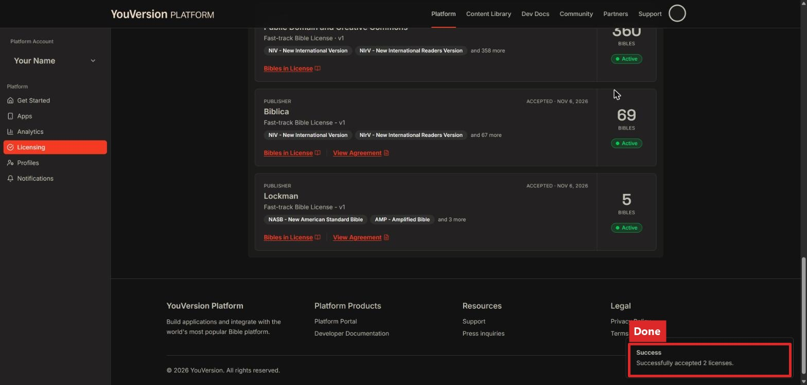
On your Light Phone, go to Settings → Translations → API Keys → YouVersion App Key → Enter Key, and type the key you copied.
That's it! NIV and NASB passages will now work in Verses.